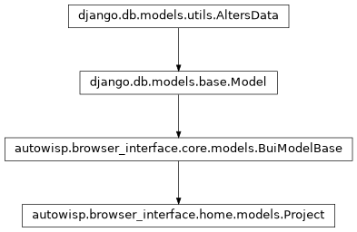

autowisp.browser_interface.home.models module
Class Inheritance Diagram

Models describing the projects known to the browser interface.
- class autowisp.browser_interface.home.models.Project(*args, **kwargs)[source]
Bases:
BuiModelBase
Model to represent a project.
- exception DoesNotExist
Bases:
ObjectDoesNotExist
- exception MultipleObjectsReturned
Bases:
MultipleObjectsReturned
- exception NotUpdated
Bases:
ObjectNotUpdated,DatabaseError
- created
A wrapper for a deferred-loading field. When the value is read from this object the first time, the query is executed.
- description
A wrapper for a deferred-loading field. When the value is read from this object the first time, the query is executed.
- get_next_by_created(*, field=<django.db.models.fields.DateTimeField: created>, is_next=True, **kwargs)
- get_next_by_modified(*, field=<django.db.models.fields.DateTimeField: modified>, is_next=True, **kwargs)
- get_previous_by_created(*, field=<django.db.models.fields.DateTimeField: created>, is_next=False, **kwargs)
- get_previous_by_modified(*, field=<django.db.models.fields.DateTimeField: modified>, is_next=False, **kwargs)
- id
A wrapper for a deferred-loading field. When the value is read from this object the first time, the query is executed.
- modified
A wrapper for a deferred-loading field. When the value is read from this object the first time, the query is executed.
- name
A wrapper for a deferred-loading field. When the value is read from this object the first time, the query is executed.
- objects = <django.db.models.manager.Manager object>
- path
A wrapper for a deferred-loading field. When the value is read from this object the first time, the query is executed.